## True simple linear regression data-generating process
set.seed(32123)
n <- 30
beta1 <- 77 ## intercept
beta2 <- -1.75 ## slope (negative: more hair → lower jump & reach scores)
sigma <- 5 ## error standard deviation
## Generate the predictor X: hair length ~ 50/50 mixture of two normal components
mu_X_m <- 7; sigma_X_m <- 3 ## short-hair component
mu_X_f <- 27; sigma_X_f <- 7 ## long-hair component
gender <- sample(c("female", "male"), size = n, replace = TRUE, prob = c(0.5, 0.5))
hairlength <- round(pmax(
ifelse(gender == "female", rnorm(n, mu_X_f, sigma_X_f),
rnorm(n, mu_X_m, sigma_X_m)), 1), 2)
## Generate the outcome Y: Y_i = beta1 + beta2*X_i + eps_i, with eps_i ~ N(0, sigma^2)
jumpheight <- round(pmax(beta1 + beta2 * hairlength + rnorm(n, 0, sigma), 0), 2)
gender01 <- ifelse(gender == "female", 1, 0)
## Data frame (the only thing we observe usually)
jumptest_data <- data.frame(hairlength = hairlength,
jumpheight = jumpheight,
gender = gender,
gender01 = gender01)
write.csv(jumptest_data, file = "DATA/jumptest_data.csv", row.names = FALSE)
## Marginal distribution of Y (derived analytically by marginalising over X):
## Y ~ 0.5*N(mu_Y_m, sigma_Y_m^2) + 0.5*N(mu_Y_f, sigma_Y_f^2)
mu_Y_m <- beta1 + beta2 * mu_X_m
sigma_Y_m <- sqrt(beta2^2 * sigma_X_m^2 + sigma^2)
mu_Y_f <- beta1 + beta2 * mu_X_f
sigma_Y_f <- sqrt(beta2^2 * sigma_X_f^2 + sigma^2)
## True distribution functions (usually unknown)
f_X <- function(x) 0.5*dnorm(x, mu_X_m, sigma_X_m) + 0.5*dnorm(x, mu_X_f, sigma_X_f)
F_X <- function(x) 0.5*pnorm(x, mu_X_m, sigma_X_m) + 0.5*pnorm(x, mu_X_f, sigma_X_f)
f_Y <- function(y) 0.5*dnorm(y, mu_Y_m, sigma_Y_m) + 0.5*dnorm(y, mu_Y_f, sigma_Y_f)
F_Y <- function(y) 0.5*pnorm(y, mu_Y_m, sigma_Y_m) + 0.5*pnorm(y, mu_Y_f, sigma_Y_f)
f_YgX <- function(y, x) dnorm(y, beta1 + beta2 * x, sigma) ## conditional density2 Review of Probability and Statistics
\[ \require{color} \newcommand{\highlight}[2][yellow]{\mathchoice% {\colorbox{#1}{$\displaystyle#2$}}% {\colorbox{#1}{$\displaystyle#2$}}% {\colorbox{#1}{$\displaystyle#2$}}% }% \]
Regression analysis, and statistics in general, rests on a probabilistic framework: the data we observe are assumed to be realizations of some underlying random process. This chapter builds the vocabulary needed to make that idea precise.
The central concept we work toward is the data-generating process (DGP); i.e., the probability model that we imagine produced the observed data. Understanding the DGP is the key to understanding what regression estimates, and what it cannot tell us.
2.1 Where Does Data Come From?
Suppose we run a small study — admittedly a somewhat strange one: for each of \(n\) students we measure the length of their hair (in cm) and let them perform a jump-and-reach test — jumping as high as possible, where we record the jump height (in cm). The result is a dataset with two columns and \(n\) rows — one row per student.
🤓 I generated the data artificially. That is, I know the true usually unknown data generating process from which the data is sampled. That’s a didactic hack that allows me to demonstrate the difference between estimated quantities and their typically unknown true counterparts.
Code to Generate the Jump-Test Data
| Hair Length (cm) | Jump Height (cm) |
|---|---|
| 3.94 | 71.84 |
| 3.40 | 64.82 |
| 30.06 | 26.43 |
| 3.95 | 77.58 |
| 4.10 | 64.46 |
| 16.68 | 53.45 |
Even from the first six rows, we see two things:
- There appears to be a pattern: shorter hair tends to go together with higher jump heights.
- The relationship is noisy — knowing someone’s hair length does not tell us exactly what jump height they will achieve.
Figure 2.1 displays all \(n = 30\) observations. The downward trend is visible, but so is the variability around it.
plot(jumptest_data$hairlength, jumptest_data$jumpheight,
xlab = "Hair Length (cm)",
ylab = "Jump Height (cm)",
pch = 19,
col = adjustcolor("steelblue", alpha.f = 0.7))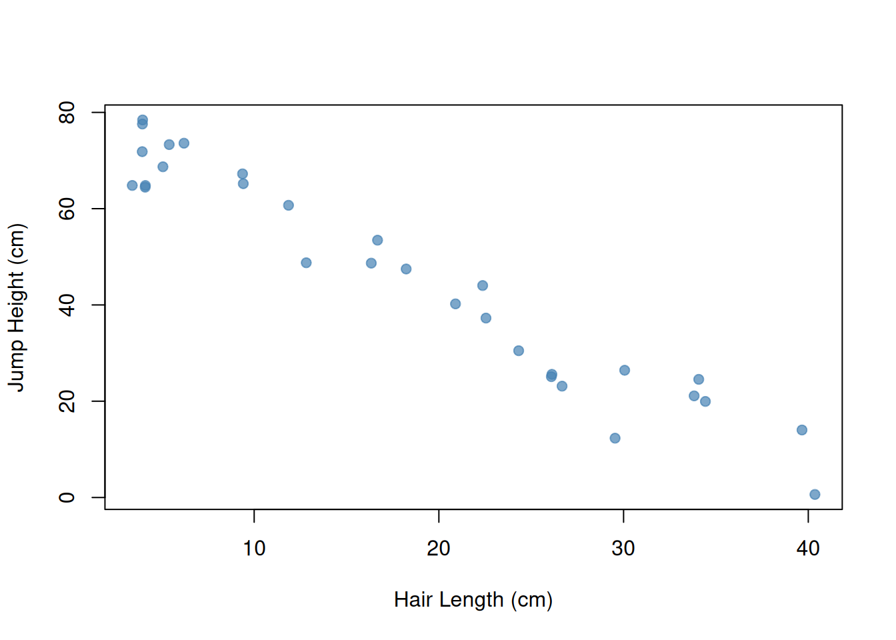
🤔 Now ask yourself: What would happen if we ran the study again with a different group of 30 students?
🤓 You would get different hair lengths and different jump heights for each student. The overall pattern might persist, but every individual number would change. The dataset is, in this sense, random: it is one particular outcome of a process that could have produced many different outcomes. Keyword: sampling variability.
This observation is the starting point of statistics. The data we observe are a realization of a random process. Had the process run differently (different students, a different year), we would have seen different data. The data-generating process (DGP) is the underlying probability model that governs this random process. Everything in this chapter builds toward a useful formulation of the DGP.
2.2 Random Variables and Distributions
The key mathematical concept is the random variable. You can view a random variable as a data generator.
A random variable, say \(X,\) can give us values, for instance,
- numeric values: \(X\in\mathbb{R},\) i.e., any real number
- qualitative values: \(X\in\{\texttt{red}, \texttt{blue}, \texttt{green}\}\)
The values occur based on an underlying (typically unknown) law: the distribution of the random variable \(X.\)
Before we observe the realized value, \(X\) is uncertain — it could take many different values. After observing it, we have a realization: one specific value that \(X\) happened to take. For this realized, no-longer-uncertain value we write \[ X_{\operatorname{obs}}. \] The subscript “obs” is a reminder that the value has been observed and is now a fixed number, not a random quantity. We reserve the upper-case letter \(X\) without subscript for the random variable itself — uncertain, not yet pinned down to a single value.
🤸♀️ Jump-Test Data Example
- Random Variable \(Y\): The jump height of a randomly drawn student is a random variable, which we call \(Y\). It can take any value \(\geq 0.\)
- Random Variable \(X\): The hair length of a randomly drawn student is another random variable, \(X\). It, too, can take any value \(\geq 0.\)
Our study has \(n\) students, indexed by \(i = 1, \ldots, n\). The hair length and jump height of student \(i\) are the random variable pairs \[ (Y_i, X_i), \qquad i = 1, \ldots, n. \] Once we have measured student \(i\), we record the observed value pair \[ (Y_{i,\operatorname{obs}}, X_{i,\operatorname{obs}}), \qquad i = 1, \ldots, n. \]
The full dataset consists of \(n\) pairs (one pair per student): \[ (Y_{1,\operatorname{obs}},\, X_{1,\operatorname{obs}}),\, (Y_{2,\operatorname{obs}},\, X_{2,\operatorname{obs}}),\, \ldots,\, (Y_{n,\operatorname{obs}},\, X_{n,\operatorname{obs}}) \] In our jump-test data set (Table 2.1) we have \(n = 30\) students.
Figure 2.2 shows possible realizations of the random variables that I used to generate the data in our jump-test example. Each observed pair \((Y_{i,\operatorname{obs}},\, X_{i,\operatorname{obs}})\) is one possible realization of the underlying random variable pair \((Y_i,\, X_i)\) of student \(i=1,\dots,n\). The dashed black curves are the true (usually unknown) densities \(f_X(x)\) and \(f_Y(y)\): realizations tend to cluster where the densities are large.
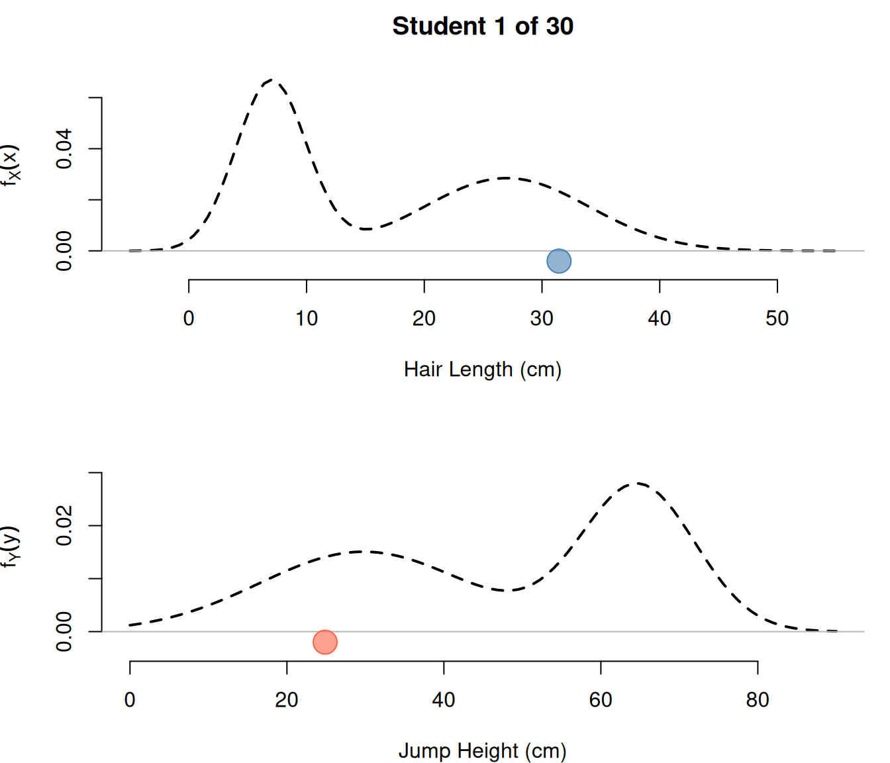
Summary and Outline
We view the observed data \[ (Y_{1,\operatorname{obs}},\, X_{1,\operatorname{obs}}),\, (Y_{2,\operatorname{obs}},\, X_{2,\operatorname{obs}}),\, \ldots,\, (Y_{n,\operatorname{obs}},\, X_{n,\operatorname{obs}}), \] shown in Table 2.1, as a realization of \(n\) random variable pairs \[ (Y_{1},\, X_{1}),\, (Y_{2},\, X_{2}),\, \ldots,\, (Y_{n},\, X_{n}). \]
The realizations are randomly drawn from underlying (typically unknown) distributions.
The main tools for characterizing the distributions of single random variables:
- probability density function (pdf): Section 2.2.1
- probability mass function (pmf): Section 2.2.2
- cumulative distribution function (cdf): Section 2.2.3
- univariate mean and variance: Section 2.3
The main tools for characterizing the distributions of multiple random variables:
- joint and conditional distributions: Section 2.4
- conditional means (regression): Section 2.5
2.2.1 Density Function
Continuous Random Variables
A random variable, say \(X,\) that can take any value in an interval \([a,b]\) \[ X\in[a,b] \] is called a continuous random variable as it takes values in the continuum of real numbers \([a,b]\subset\mathbb{R}.\)
Examples of continuous random variables:
- Age \(A_i\) taking the values \(A_i\geq 0\) [years, days, hours, minutes, seconds, etc.]
- Height \(H_i\) taking the values \(H_i\geq 0\) [m, cm, mm, etc.]
- Temperature \(T_i\) taking values \(-\infty < T_i < \infty\) [degrees Celsius]
Density Function
For a continuous random variable \(X\) we can describe its distribution most conveniently using the probability density function (pdf) \(f_X(x).\)
A probability density function (pdf) \(f_X(x)\) has the following key properties:
1. Non-Negativity: \[ f_X(x) \geq 0 \quad \text{for all} \quad x \] 2. Total Probability: \[ \int_{-\infty}^{\infty} f_X(x)\, dx = 1 \] 3. General Probabilities: The probability that \(X\) falls in the interval \([a, b]\) is the area under the density curve over \([a,b]\): \[ P(a \leq X \leq b) = \int_a^b f_X(x)\, dx \]
Note that the density value \(f_X(x)\) is not itself a probability. Only areas under \(f_X\) correspond to probabilities. In fact, \(f_X(x)\) can take values larger than 1.
💻 Data Generation
If the true density is known (usually not the case), we can generate realizations on the computer. For instance, in case of a normally distributed random variable (Section 2.6.1) with mean \(1.6\) and variance \(2,\) we can use the following code:
⚒️ Estimation
In practice, the true functional form of a density \(f_X\) which generates the data is (typically) unknown. It’s a part of the data-generating process we are trying to learn from data.
🤸♀️ Jump-Test Data Example
Given a sample of observations \[ X_{1,\text{obs}}, \ldots, X_{n,\text{obs}}, \] and \[ Y_{1,\text{obs}}, \ldots, Y_{n,\text{obs}}, \] we can estimate the underlying densities \(f_X\) and \(f_Y\) without assuming specific functional forms. Two standard estimators are:
- The histogram estimator divides the range of the data into bins and estimates \(f_X\) and \(f_Y\) by the relative frequency of observations falling into each bin. It is a step function.
- The kernel density estimator places a small symmetric bump (a kernel) centered at each observation and sums them up. The result is a smooth curve.
Both of these (non-parametric) estimators converge to the true \(f_X(x)\) and \(f_Y(y)\) as \(n \to \infty,\) if used correctly.
Figure 2.3 shows the estimation results based on the observed hair-length data \[ X_{1,\text{obs}}, \ldots, X_{n,\text{obs}} \] together with the true usually unknown density \(f_X\).
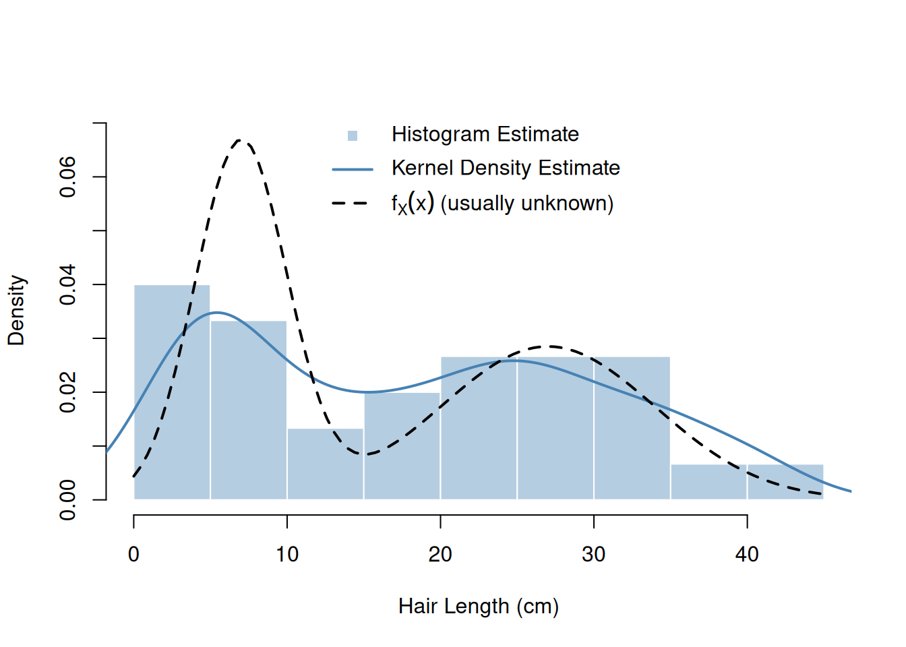
Figure 2.4 shows the estimation results based on the observed jump-height data \[ Y_{1,\text{obs}}, \ldots, Y_{n,\text{obs}} \] together with the true usually unknown density \(f_Y\).
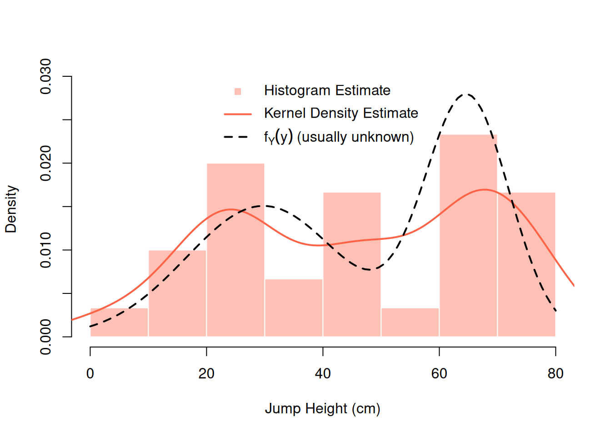
Summary: Density Function
- 🤓 The probability density function (pdf), or density for short, allows describing the distribution of continuous random variables.
- 🙂 Densities are particularly intuitive to interpret: The realizations of a random variable tend to cluster at regions of high density.
- 🙁 As long as we only look at marginal densities \(f_X(x)\) or \(f_Y(y),\) we cannot see a possible connection between the random variables \(X\) and \(Y.\) To see connections, we need
- joint densities \(f_{Y,X}\) (Section 2.4) or
-
conditional means (regression) (Section 2.5).
- ⚒️ Non-parametric estimation: To estimate an unknown density function \(f_X(x)\) we can use for instance a histogram or a kernel density estimator.
- 🙂 Require no functional form assumption
- 🙁 Inefficient estimation
- ⚒️ Parametric estimation: If you know the general functional form of \(f_X(x)\) you can improve the estimation result. For instance, if \(f_X(x)\) is the density of a normal distribution, but you do not know the mean and variance parameters, you can focus on estimating these unknown parameters instead of estimating the entire functional form; see Section 2.6.1.
- 🙁 Requires a functional form assumption
- 🙂 Efficient estimation
2.2.2 Probability Mass Function
Discrete Random Variables
A random variable, say \(W,\) that takes only countably many values such as \[ W_i \in\{w_1, w_2, \ldots\}, \] is called a discrete random variable.
Examples of discrete random variables:
- Gender1 \(G_i\in\{\texttt{female}, \texttt{male}\}\)
- Rolling a die \(D_i\in\{1,2,3,4,5,6\}\)
- Eye color \(C_i\in\{\texttt{blue}, \texttt{brown}, \texttt{hazel}, \texttt{green}, \texttt{gray}\}\)
- Number of coin flips required to get the first head, \(N_i\in\{1,2,\dots\}\)
1 In practice, gender and biological sex are measured in various ways depending on the research context. This example uses a binary coding for simplicity; real datasets may include additional categories or continuous measures.
For a discrete random variable, a density function does not exist. There is no smooth curve whose area gives probabilities, because all probability is concentrated on isolated points.
Probability Mass Function
For a discrete random variable \[ W\in\{w_1,w_2,\dots\} \] we describe its distribution using the probability mass function (pmf) \[ p_W(w_k) = P(W = w_k)\quad\text{for all}\quad k=1,2,\dots \] The pmf has the following three key properties:
1. Non-Negativity: \[ p_W(w_k) \geq 0\quad\text{for all}\quad k=1,2,\dots \] 2. Total Probability: \[ \sum_{k=1,2,\ldots} p_W(w_k) = 1 \] 3. General Probabilities: The probability that \(W\) takes a value in a set \(A\) is the sum of the corresponding pmf values: \[ P(W \in A) = \sum_{k:\, w_k \in A} p_W(w_k) \]
Unlike the density \(f_X(x)\), the value \(p_W(w_k)\) is itself a probability — the probability that \(W\) takes the value \(w_k.\)
💻 Data Generation
If the true pmf is known (usually not the case), we can generate realizations on the computer. For instance, to generate realizations of a random gender variable with the two outcomes \[ G_i\in\{\texttt{female}, \texttt{male}\} \] we can use the following code:
n <- 11 # sample size (number of realizations)
gender_realizations <- sample(
c("female", "male"), # possible outcome values
size = n, # sample size
replace = TRUE, # values can occur more than once
prob = c(1/2, 1/2) # probabilities for each outcome value
)
head(gender_realizations) # first six values[1] "female" "female" "male" "female" "female" "male" ⚒️ Estimation
In practice, we typically know the values \(w_1,w_2,\dots\) a discrete random variable \(W\) can take, but the corresponding probabilities \(p_W\) are (typically) unknown. Given the observed realizations \[ W_{1,\operatorname{obs}}, \ldots, W_{n,\operatorname{obs}}, \] we estimate the values of the pmf \(p_W(w_k)\) using relative frequencies: \[\begin{align*} \hat{p}_{W,\operatorname{obs}}(w_k) &= \frac{\text{number of observations equal to } w_k}{n}\\ &= \frac{1}{n}\sum_{i=1}^n\mathbf{1}(W_{i,\text{obs}} = w_k)\quad\text{for all}\quad k = 1, 2, \ldots, \end{align*}\] where \(\mathbf{1}(\texttt{TRUE})=1\) and \(\mathbf{1}(\texttt{FALSE})=0\) is the indicator function.
🤸♀️ Jump-Test Data Example
Let’s say a third variable was recorded alongside hair length and jump height: a gender indicator \(G_i\) called gender taking the value
- \(G_i = \texttt{male}\) if student \(i\) is a male student
- \(G_i = \texttt{female}\) if student \(i\) is a female student
Table 2.2 shows the first six values of the observed gender variable data \[ G_{1,\text{obs}},\dots,G_{n,\text{obs}} \]
| Gender |
|---|
| male |
| male |
| female |
| male |
| male |
| female |
Since \(G_i\) takes only two values \(\{\texttt{male},\texttt{female}\},\) it is a discrete random variable, and its distribution is characterized by the (unknown) pmf values \(p_G(\texttt{male})\) and \(p_G(\texttt{female}).\)
Figure 2.5 shows the estimation results \[\begin{align*} \hat{p}_{G,\operatorname{obs}}(\texttt{male}) &= \frac{\text{number of observations equal to } \texttt{male}}{n}\\[4pt] &= \frac{1}{n}\sum_{i=1}^n\mathbf{1}(G_{i,\text{obs}} = \texttt{male})\\[4pt] &= \texttt{sum(gender == "male") / length(gender)}\\[4pt] &= 0.37 \end{align*}\]
and
\[\begin{align*}
\hat{p}_{G,\operatorname{obs}}(\texttt{female})
&= \frac{\text{number of observations equal to } \texttt{female}}{n}\\[4pt]
&= \frac{1}{n}\sum_{i=1}^n\mathbf{1}(G_{i,\text{obs}} = \texttt{female})\\[4pt]
&= \texttt{sum(gender == "female") / length(gender)}\\[4pt]
&= 0.63
\end{align*}\]
together with the usually unknown true pmf values \[
p_G(\texttt{male}) = p_G(\texttt{female}) = 0.5.
\]
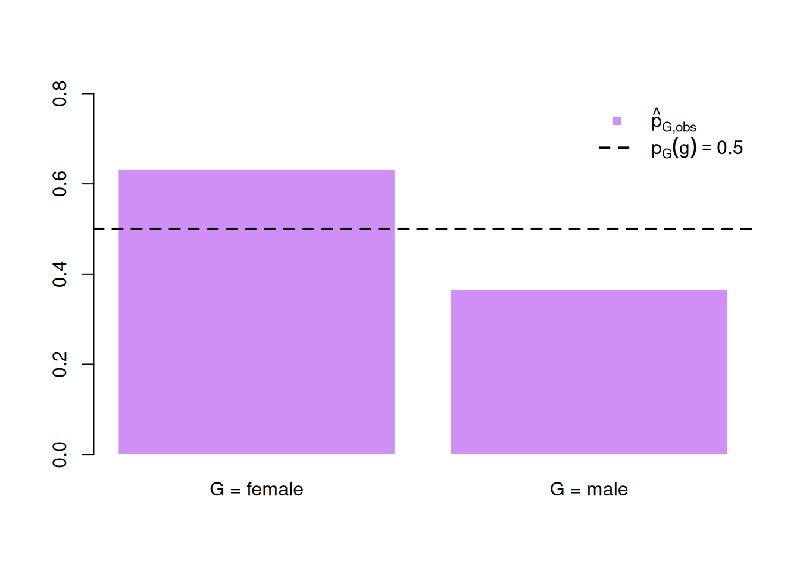
Summary: Probability Mass Function
- 🤓 The probability mass function (pmf) allows describing the distribution of discrete random variables.
- 🙂 Probability mass functions are easy to interpret: The realizations of a discrete random variable tend to take values that have a high probability.
- 🙁 As long as we only look at marginal pmfs, we cannot see a possible connection between two or more random variables.
- ⚒️ Non-parametric estimation: To estimate an unknown pmf we can simply use relative frequencies.
2.2.3 Cumulative Distribution Function
The cumulative distribution function (cdf) or short distribution function \(F_X(x)\) is defined as \[ F_X(x) = P(X \leq x). \]
This definition works for any random variable: continuous, discrete, and even hybrid ones that are partly continuous and partly discrete.
\(F_X(x)\) tells us the probability that \(X\) takes a value at most \(x\). It has the following properties:
1. \(F_X(x)\) is Non-Decreasing: \[ x_1 < x_2 \Rightarrow F_X(x_1) \leq F_X(x_2) \] 2. \(F_X(x)\) is Normalized: \[ \lim_{x \to -\infty} F_X(x) = 0\quad\text{and}\quad \lim_{x \to +\infty} F_X(x) = 1. \] 3. \(F_X(x)\) is Right-Continuous: \[ \lim_{x \to c+} F_X(x) = F_X(c), \] where \(x \to c+\) means that \(x\) goes to \(c\) from the “right”, i.e., coming from values larger than \(c\).
4. For continuous \(X\): \[ F_X(x) = P(X \leq x) = \int_{-\infty}^x f_X(t)\, dt. \] and \[ f_X(x) = F'_X(x), \] where \(F'_X(x)\) denotes the first derivative of \(F_X(x).\)
⚒️ Estimation
In practice, the true cdf is (typically) unknown. Given the observed values, we estimate it with the empirical cdf, defined as the fraction of observations at most \(x\):
\[\begin{align*} \widehat{F}_{X,\operatorname{obs}}(x) & = \frac{\text{number of observations equal to or smaller than $x$}}{n}\\ & = \frac{1}{n} \sum_{i=1}^{n} \mathbf{1}(X_{i,\operatorname{obs}} \leq x), \end{align*}\] where \(\mathbf{1}(\texttt{TRUE})=1\) and \(\mathbf{1}(\texttt{FALSE})=0\) is the indicator function.
The empirical cdf \(\widehat{F}_{X,\operatorname{obs}}\) is a step function that converges to the true cdf \(F_X\) as \(n \to \infty\).
In R, ecdf() computes the empirical cdf \(\widehat{F}_{X,\operatorname{obs}}(x).\)
🤸♀️ Jump-Test Data Example
Figure 2.6 shows \[ \widehat{F}_{X,\operatorname{obs}}(x) = \frac{1}{n} \sum_{i=1}^{n} \mathbf{1}(X_{i,\operatorname{obs}} \leq x), \] based on the observed hair-length data \[ X_{1,\text{obs}}, \ldots, X_{n,\text{obs}} \] together with the true usually unknown cdf \(F_X\).
plot(ecdf(jumptest_data$hairlength),
xlab = "Hair Length (cm)",
ylab = expression(hat(F)["X,obs"](x)),
main = "",
col = "steelblue",
lwd = 2,
verticals = TRUE,
do.points = FALSE)
curve(F_X(x), add = TRUE, col = "black", lwd = 2, lty = 2)
legend("topleft",
legend = c(expression(hat(F)["X,obs"](x)), expression(F[X](x))),
col = c("steelblue", "black"),
lty = c(1, 2), lwd = 2, bty = "n")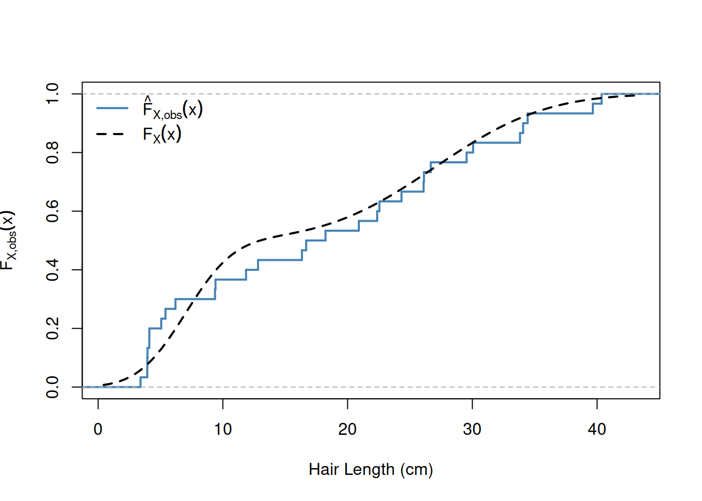
Figure 2.7 shows \[ \widehat{F}_{Y,\operatorname{obs}}(y) = \frac{1}{n} \sum_{i=1}^{n} \mathbf{1}(Y_{i,\operatorname{obs}} \leq y), \] based on the observed jump-height data \[ Y_{1,\text{obs}}, \ldots, Y_{n,\text{obs}} \] together with the true usually unknown cdf \(F_Y\).
plot(ecdf(jumptest_data$jumpheight),
xlab = "Jump Height (cm)",
ylab = expression(hat(F)["Y,obs"](y)),
main = "",
col = "tomato",
lwd = 2,
verticals = TRUE,
do.points = FALSE)
curve(F_Y(x), add = TRUE, col = "black", lwd = 2, lty = 2)
legend("topleft",
legend = c(expression(hat(F)["Y,obs"](y)), expression(F[Y](y))),
col = c("tomato", "black"),
lty = c(1, 2), lwd = 2, bty = "n")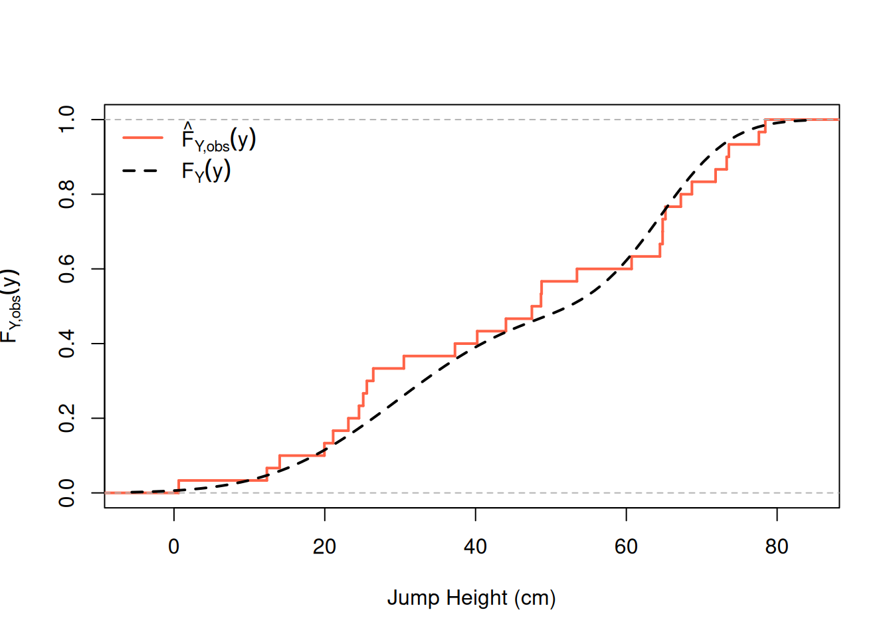
Summary: Distribution Function
- 🤓 The cdf is well-defined for continuous and discrete random variables, and even for mixtures of the two. The definition \[
F_X(x) = P(X \leq x)
\] requires nothing more than a probability, and probabilities are always defined.
- 🙁 As long as we only look at marginal cdfs, we cannot see a possible connection between two or more random variables.
- ⚒️ Non-parametric estimation: To estimate an unknown cdf we can simply use relative frequencies.
2.3 Mean and Variance
The following two parameters summarize a distribution more compactly than the full density:
- Mean: The expected value or mean tells us something about the center, i.e., the location, of a distribution
- Variance: The variance tells us something about how much the values spread out around the mean.
❗ Mean (location) and variance (spread) are only two particular features of a distribution. Knowing both parameters does not give us the complete functional form of a distribution.
Mean Value
The mean or expected value of a continuous random variable \(X\) with density \(f_X\) is \[ \mu_X = E(X) = \int_{-\infty}^{\infty} x\, f_X(x)\, dx. \]
Think of \(E(X)\) as the long-run average: if you drew from the distribution \(f_X\) many times and averaged the results, the average would converge to \(E(X)\) when averaging infinitely many results.
For a discrete random variable \(W\) with possible values \(w_1, w_2, \ldots\) and probabilities \(p_W(w_k) = P(W = w_k)\), the integral becomes a sum: \[ \mu_W = E(W) = \sum_{k=1,2,\dots} w_k\, p_W(w_k). \]
❗ The mean of a discrete random variable \[ W\in\{w_1,w_2,\dots\} \] only makes sense in cases where the values \(w_1,w_2,\dots\) are numeric.
Example: The expected value when rolling a die \[ D\in\{1,2,3,4,5,6\} \] is \[\begin{align*} E(D) & = 1 \cdot \frac{1}{6} + 2 \cdot\frac{1}{6} + 3\cdot\frac{1}{6} + 4 \cdot\frac{1}{6} + 5 \cdot\frac{1}{6}+ 6 \cdot\frac{1}{6}\\ & = \frac{1}{6}\cdot(1+2+3+4+5+6)\\ & = \frac{1}{6} \cdot \sum_{k=1}^6 k \\ & = \frac{1}{6} \cdot \frac{6\cdot(6+1)}{2} = 3.5 \end{align*}\] where \(\sum_{k=1}^6 k = \frac{6\cdot(6+1)}{2}\) follows from the Gaussian summation formula.
Properties of the Expected Value
The expected value is linear; i.e., for constants \(a\) and \(b\), \[ E(aX + b) = a\, E(X) + b. \]
For two random variables \(X\) and \(Y\) (not necessarily independent of each other): \[ E(X + Y) = E(X) + E(Y). \]
⚒️ Estimation
In practice, the true density \(f_X\) and the true pmf \(p_W\) are typically unknown — so neither formula can be evaluated directly to compute the true means \(E(X)\) and \(E(W).\)
Given observed realizations of a continuous random variable \[ X_{1,\text{obs}},\dots,X_{n,\text{obs}} \] we can estimate \(E(X)\) by \[ \bar{X}_{\operatorname{obs}} = \frac{1}{n} \sum_{i=1}^n X_{i,\operatorname{obs}}. \] Alternative notations: \[ \bar{X}_{\operatorname{obs}} = \hat{\mu}_{X,\operatorname{obs}} = \widehat{E}_{\operatorname{obs}}(X) \]
Given observed realizations of a discrete random variable \[ W_{1,\text{obs}},\dots,W_{n,\text{obs}} \] we can estimate \(E(W)\) by \[ \bar{W}_{\operatorname{obs}} = \frac{1}{n} \sum_{i=1}^n W_{i,\operatorname{obs}}. \] Alternative notations: \[ \bar{W}_{\operatorname{obs}} = \hat{\mu}_{W,\operatorname{obs}} = \widehat{E}_{\operatorname{obs}}(W) \]
❗ Estimating the mean of a discrete random variable \[ W\in\{w_1,w_2,\dots\} \] only makes sense in cases where the values \(w_1,w_2,\dots\) are numeric (e.g., rolling a die).
🤸♀️ Jump-Test Data Example
Given observed data \[ X_{1,\operatorname{obs}}, \ldots, X_{n,\operatorname{obs}} \] and \[ Y_{1,\operatorname{obs}}, \ldots, Y_{n,\operatorname{obs}} \] we can estimate the expected values \(E(X)\) and \(E(Y)\) by the sample means: \[ \bar{X}_{\operatorname{obs}} = \frac{1}{n} \sum_{i=1}^n X_{i,\operatorname{obs}} \] \[ \bar{Y}_{\operatorname{obs}} = \frac{1}{n} \sum_{i=1}^n Y_{i,\operatorname{obs}} \]
In R, mean() computes the sample means:
-
\(\bar{X}_{\operatorname{obs}}=\)
mean(jumptest_data$hairlength)\(=\) 18.2 -
\(\bar{Y}_{\operatorname{obs}}=\)
mean(jumptest_data$jumpheight)\(=\) 45.8
Since we generated the data ourselves, we also know the true population means — usually unknown in practice. So we can check that the estimates are doing a good job; both have values close to the true values:
| True (usually unknown) value | Estimated value |
|---|---|
| \(E(X)=\) 17 | \(\bar{X}_{\operatorname{obs}}=\) 18.2 |
| \(E(Y)=\) 47.25 | \(\bar{Y}_{\operatorname{obs}}=\) 45.8 |
Law of Large Numbers
This is not a lucky coincidence. The Law of Large Numbers guarantees that the sample means converge to the true means as the sample size grows, \[ \bar{X}_{\operatorname{obs}} \longrightarrow E(X) \quad\text{and}\quad \bar{Y}_{\operatorname{obs}} \longrightarrow E(Y) \qquad\text{as}\quad n \to \infty. \]
In other words: for largish sample sizes, we can consider \(\bar{X}_{\operatorname{obs}}\) and \(\bar{Y}_{\operatorname{obs}}\) as good estimates of the usually unknown \(E(X)\) and \(E(Y).\)
❗ However, they always remain estimates (think of them as guessing machines) of the true, usually unknown counterparts — with \(n=30\) students, the guesses are good, but never exact.
Variance and Standard Deviation
The variance of a continuous random variable \(X\) with density \(f_X\) is the expected squared deviation from its mean:
\[\begin{align*} \sigma_X^2 = \text{Var}(X) &= E\!\left[(X - \mu_X)^2\right]\\ &= \int_{-\infty}^{\infty} (x - \mu_X)^2\, f_X(x)\, dx. \end{align*}\]
The standard deviation is \[ \sigma_X = \text{SD}(X) = \sqrt{\text{Var}(X)}, \] which has the same units as \(X\) and is therefore easier to interpret.
Think of \(\text{Var}(X)\) as the average squared distance of a draw from the mean. A large variance means draws tend to spread far from \(\mu_X\); a small variance means they cluster tightly around it. The standard deviation \(\text{SD}(X)\) expresses that same spread on the original scale of \(X\).
For a discrete random variable \(W\) with possible values \(w_1, w_2, \ldots\) and probabilities \(p_W(w_k) = P(W = w_k)\), the integral becomes a sum:
\[\begin{align*} \sigma_W^2 = \text{Var}(W) &= E\!\left[(W - \mu_W)^2\right]\\ &= \sum_{k=1,2,\dots} (w_k - \mu_W)^2\, p_W(w_k). \end{align*}\]
Example: The variance when rolling a fair die \(D \in \{1,2,3,4,5,6\}\), where \(E(D) = 3.5\), is \[\begin{align*} \text{Var}(D) &= (1-3.5)^2\cdot\tfrac{1}{6} + (2-3.5)^2\cdot\tfrac{1}{6} + (3-3.5)^2\cdot\tfrac{1}{6}\\ &\phantom{=} + (4-3.5)^2\cdot\tfrac{1}{6} + (5-3.5)^2\cdot\tfrac{1}{6} + (6-3.5)^2\cdot\tfrac{1}{6}\\[2ex] &= \frac{1}{6}\cdot\big[(1-3.5)^2 + (2-3.5)^2 + (3-3.5)^2 \\ &\phantom{\frac{1}{6}\cdot} + (4-3.5)^2 + (5-3.5)^2 + (6-3.5)^2\big]\\[2ex] &= \frac{1}{6}\cdot\left[\frac{25}{4} + \frac{9}{4} + \frac{1}{4} + \frac{1}{4} + \frac{9}{4} + \frac{25}{4}\right]\\[2ex] &= \frac{1}{6}\cdot\frac{25+9+1+1+9+25}{4}\\[2ex] &= \frac{35}{12} \approx 2.92, \end{align*}\] so the standard deviation is
\[ \text{SD}(D) = \sqrt{35/12} \approx 1.71. \]
Properties of Variance and Standard Deviation
Variance scales quadratically with the scale factor and is unaffected by constant shifts: \[ \text{Var}(aX + b) = a^2\,\text{Var}(X). \] Standard deviation scales linearly and is likewise unaffected by constant shifts: \[ \text{SD}(aX + b) = |a|\,\text{SD}(X). \]
⚒️ Estimation
In practice, the true density \(f_X\) is typically unknown — so neither \(\text{Var}(X)\) nor \(\text{SD}(X)\) can be evaluated directly.
Given observed realizations \[ X_{1,\operatorname{obs}}, \ldots, X_{n,\operatorname{obs}}, \] we estimate \(\text{Var}(X)\) by the sample variance \[ \hat{\sigma}^2_{X,\operatorname{obs}} = \widehat{\text{Var}}_{\operatorname{obs}}(X) = \frac{1}{n-1}\sum_{i=1}^n \bigl(X_{i,\operatorname{obs}} - \bar{X}_{\operatorname{obs}}\bigr)^2, \] and \(\text{SD}(X)\) by the sample standard deviation \[ \hat{\sigma}_{X,\operatorname{obs}} = \sqrt{\hat{\sigma}^2_{X,\operatorname{obs}}}. \] The divisor \(n-1\) rather than \(n\) corrects for the fact that \(\bar{X}_{\operatorname{obs}}\) is itself estimated from the same data.
🤸♀️ Jump-Test Data Example
In R, var() computes the sample variance and sd() computes the sample standard deviation:
-
\(\hat\sigma_{X,\operatorname{obs}}^2=\)
var(jumptest_data$hairlength)\(=\) 144.6 -
\(\hat\sigma_{X,\operatorname{obs}}=\)
sd(jumptest_data$hairlength)\(=\) 12 -
\(\hat\sigma_{Y,\operatorname{obs}}^2=\)
var(jumptest_data$jumpheight)\(=\) 516.6 -
\(\hat\sigma_{Y,\operatorname{obs}}=\)
sd(jumptest_data$jumpheight)\(=\) 22.7
Since we generated the data ourselves, we also know the true population variances and standard deviations (usually unknown in practice):
- \(\sigma_X^2=\) 129
- \(\sigma_X=\) 11.4
- \(\sigma_Y^2=\) 420.1
- \(\sigma_Y=\) 20.5
2.4 Joint and Conditional Distributions
Most interesting statistical questions involve two or more random variables. Often, we want to understand how they vary together.
Bivariate Density Function
For two continuous random variables, the joint distribution is characterized by the bivariate probability density function (bivariate pdf) \(f_{Y,X}(y, x)\), which has the following key properties:
1. Non-Negativity: \[ f_{Y,X}(y, x) \geq 0 \quad \text{for all } (y, x) \] 2. Total Probability: \[ \int_{-\infty}^{\infty}\int_{-\infty}^{\infty} f_{Y,X}(y, x)\, dy\, dx = 1. \] 3. General Probabilities: \[ P\!\left((Y, X) \in [a_Y,b_Y]\times[a_X,b_X]\right) = \int_{a_Y}^{b_Y}\int_{a_X}^{b_X} f_{Y,X}(y, x)\, dx\, dy. \] That is, the probability that a realization of \((Y, X)\) falls in the rectangular region \([a_Y,b_Y]\times[a_X,b_X]\) of the plane equals the volume under the density surface over that region.
Note that \(f_{Y,X}(y, x)\) is not itself a probability — it is a density. Only volumes under \(f_{Y,X}\) correspond to probabilities. In fact, \(f_{Y,X}(y,x)\) can take values larger than 1.
Marginal Density Functions
The marginal densities \(f_Y\) and \(f_X\) are recovered from \(f_{Y,X}\) by integrating out the other variable:
\[ f_Y(y) = \int_{-\infty}^{\infty} f_{Y,X}(y, x)\, dx \] \[ f_X(x) = \int_{-\infty}^{\infty} f_{Y,X}(y, x)\, dy \]
Intuitively, \(f_X\) is what you get if you ignore \(Y\) entirely and look only at the distribution of \(X\) — exactly the univariate density we considered in Section 2.2.1.
The bivariate cdf records the probability that both components fall below their respective thresholds simultaneously:
\[ F_{Y,X}(y, x) = P(Y \leq y,\; X \leq x) = \int_{-\infty}^{y}\int_{-\infty}^{x} f_{Y,X}(t, s)\, ds\, dt. \]
If \(X\) and \(Y\) are independent (short notation: \(Y \perp X\)), knowing the value of one tells us nothing about the other. Independence is equivalent to the joint density factoring into the product of the marginals:
\[ Y \perp X \;\Longleftrightarrow\; f_{Y,X}(y,x) = f_Y(y)\cdot f_X(x), \] and, equivalently, to the joint cdf factoring as well: \[ Y \perp X \;\Longleftrightarrow\; F_{Y,X}(y,x) = F_Y(y)\cdot F_X(x). \]
🤸♀️ Jump-Test Data Example
In practice, the true bivariate density \(f_{Y,X}\), which generates the data, is (typically) unknown. Given the observed pairs \[ (Y_{1,\operatorname{obs}},\, X_{1,\operatorname{obs}}), \ldots, (Y_{n,\operatorname{obs}},\, X_{n,\operatorname{obs}}), \] we can estimate \(f_{Y,X}\) non-parametrically using, for instance, the bivariate kernel density estimator.
The bivariate kernel density estimator extends the univariate kernel estimator to two dimensions: it places a two-dimensional symmetric bump at each observed pair and sums them up, producing a smooth surface over the plane. In R, MASS::kde2d() computes the bivariate kernel density estimate from given data; contour() overlays its level curves on a scatter plot.
kde <- MASS::kde2d(jumptest_data$hairlength, jumptest_data$jumpheight, n = 50)
## True joint density on a grid (x-axis = hairlength = X, y-axis = jumpheight = Y)
hair_grid <- seq(0, 50, length.out = 80)
jump_grid <- seq(0, 80, length.out = 80)
true_z <- outer(hair_grid, jump_grid,
function(hair, jump) f_YgX(jump, hair) * f_X(hair))
plot(jumptest_data$hairlength, jumptest_data$jumpheight,
xlab = "Hair Length (cm)",
ylab = "Jump Height (cm)",
pch = 19,
col = adjustcolor("steelblue", alpha.f = 0.6))
contour(kde, add = TRUE, col = "tomato", lwd = 1.5, drawlabels = FALSE)
contour(list(x = hair_grid, y = jump_grid, z = true_z),
add = TRUE, col = "black", lwd = 1.5, lty = 2,
nlevels = 8, drawlabels = FALSE)
legend("topright",
legend = c("Kernel Density Estimate",
expression(f["Y,X"])),
col = c("tomato", "black"),
lty = c(1, 2), lwd = 1.5, bty = "n")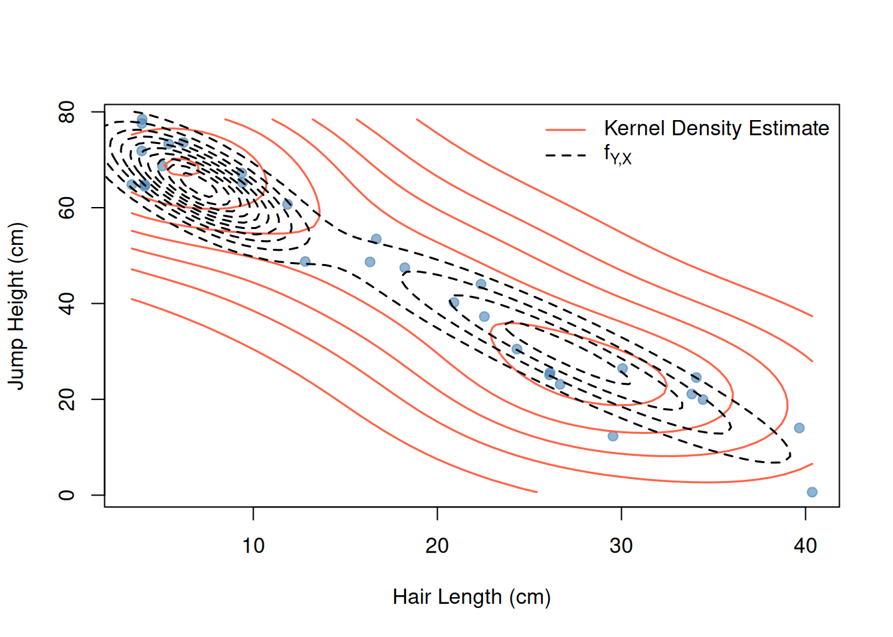
From the scatter plot and the contours in Figure 2.8, we see that the cloud of points is not circular — long hair (high values of \(X\)) tends to go together with low jump heights (low values of \(Y\)). The joint distribution of \(Y\) and \(X\) is therefore not the same as drawing \(Y\) and \(X\) independently of each other.
Covariance and Correlation
Two summary statistics
- covariance and
- correlation
describe how two random variables move together.
The covariance is
\[ \text{Cov}(X, Y) = E\!\left[(X - E(X))(Y - E(Y))\right]. \]
If large values of \(X\) tend to go with large values of \(Y\), the covariance is positive. If large values of \(X\) go with small values of \(Y\), it is negative (as in the jump-test example).
Note that the covariance of \(X\) with itself is just the variance of \(X\colon\) \[\begin{align*} \text{Cov}(X, X) &= E\!\left[(X - E(X))(X - E(X))\right]\\ &= E\!\left[(X - E(X))^2\right]\\ &=\text{Var}(X). \end{align*}\] The covariance is symmetric: \[ \text{Cov}(Y,X) = \text{Cov}(X,Y) \] Moreover, the following calculation rule is often useful: \[ \text{Cov}(a_X X + b_X, a_Y Y + b_Y) = a_X a_Y \text{Cov}(X,Y). \]
The correlation standardizes the covariance to lie in \([-1, 1]\):
\[ \text{Cor}(X, Y) = \frac{\text{Cov}(X, Y)}{\sqrt{\text{Var}(X)\cdot\text{Var}(Y)}}. \]
A correlation of \(+1\) or \(-1\) implies a perfect positive or negative linear relationship. A correlation of \(0\) implies no linear association (though a non-linear relationship may still exist).
In practice, the true \(\text{Cov}(X, Y)\) and \(\text{Cor}(X, Y)\) are (typically) unknown — they depend on the true joint distribution \(f_{Y,X}\), which we do not observe.
🎮 Your Turn: Guess the Correlation!
How good is your eye for correlations? Before computing anything, take another look at the scatter plot of our jump-test data in Figure 2.1: which value would you guess for \(\text{Cor}(X, Y)\)? Note your guess down — we compute the estimate right below.
Want to train your eye? Play a few rounds of Guess the Correlation: you are shown a scatter plot and guess its correlation — the closer your guess, the more points you score.
🤓 After a couple of rounds you will have a feeling for what a correlation of \(-0.3\) looks like in comparison to one of \(-0.9.\)
🤸♀️ Jump-Test Data Example
Given observed data \[ (Y_{1,\operatorname{obs}},\, X_{1,\operatorname{obs}}), \ldots, (Y_{n,\operatorname{obs}},\, X_{n,\operatorname{obs}}), \] we can estimate them by their sample counterparts:
\[ \widehat{\text{Cov}}_{\operatorname{obs}}(X, Y) = \frac{1}{n-1}\sum_{i=1}^n (X_{i,\operatorname{obs}} - \bar{X}_{\operatorname{obs}}) (Y_{i,\operatorname{obs}} - \bar{Y}_{\operatorname{obs}}), \]
\[ \widehat{\text{Cor}}_{\operatorname{obs}}(X, Y) = \frac{\widehat{\text{Cov}}_{\operatorname{obs}}(X, Y)}{\sqrt{\hat{\sigma}^2_{X,\operatorname{obs}}\, \hat{\sigma}^2_{Y,\operatorname{obs}}}}, \] where \(\hat{\sigma}^2_{X,\operatorname{obs}}\) and \(\hat{\sigma}^2_{Y,\operatorname{obs}}\) are the sample variances of \(X\) and \(Y\), respectively.
In R, cov() and cor() can be used to compute the empirical (i.e., data-based) estimates \(\widehat{\text{Cov}}_{\operatorname{obs}}(X,Y)\) and \(\widehat{\text{Cor}}_{\operatorname{obs}}(X,Y)\):
\(\widehat{\text{Cov}}_{\operatorname{obs}}(X,Y)=\) cov(hairlength, jumpheight) \(=\) \(-264.78\)
\(\widehat{\text{Cor}}_{\operatorname{obs}}(X,Y)=\) cor(hairlength, jumpheight) \(=\) \(-0.97\)
Conditional Distribution
The conditional distribution of \(Y\) given \(X = x\) is the distribution of jump heights among all students whose hair length is exactly \(x\) cm. It answers the question: once we know that \(X_{\operatorname{obs}} = x\), what does the distribution of the jump height \(Y\) look like?
For two continuous random variables with joint density \(f_{Y,X}(y, x)\) and marginal density \(f_X(x) > 0,\) the conditional density of \(Y\) given \(X = x\) is
\[ f_{Y \mid X}(y \mid x) = \frac{f_{Y,X}(y,\, x)}{f_X(x)}. \]
For fixed \(x\), \(f_{Y \mid X}(\,\cdot \mid x)\) is a proper density in \(y\): it is non-negative and integrates to 1. Intuitively, it is the vertical slice through the joint density surface \(f_{Y,X}\) at \(X = x\), rescaled so that the area under the slice equals 1.
The definition makes the link between joint and marginal densities concrete. Rearranging gives the multiplication rule:
\[ f_{Y,X}(y,x) = f_{Y \mid X}(y \mid x)\cdot f_X(x). \]
If \(Y\) and \(X\) are independent, we have that \[ f_{Y \mid X}(y \mid x) = f_Y(y). \] That is, knowing \(x\) tells us nothing about the distribution of \(Y.\)
🤸♀️ Jump-Test Data Example
We can get a feel for the conditional distribution from data by splitting the observed pairs \[ (Y_{1,\operatorname{obs}}, X_{1,\operatorname{obs}}), \ldots, (Y_{n,\operatorname{obs}}, X_{n,\operatorname{obs}}) \] into groups by hair length and looking at the jump-height distribution within each group.
## Grouping conditions (TRUE/FALSE for each student)
hair_short_cond <- jumptest_data$hairlength <= 10
hair_medium_cond <- jumptest_data$hairlength > 10 &
jumptest_data$hairlength <= 25
hair_long_cond <- jumptest_data$hairlength > 25
## Jump and reach scores per hair-length group
jump_hair_short <- jumptest_data$jumpheight[hair_short_cond]
jump_hair_medium <- jumptest_data$jumpheight[hair_medium_cond]
jump_hair_long <- jumptest_data$jumpheight[hair_long_cond]
## Within-group mean hair length (conditioning point for the true density)
hair_group_mean <- c(mean(jumptest_data$hairlength[hair_short_cond]),
mean(jumptest_data$hairlength[hair_medium_cond]),
mean(jumptest_data$hairlength[hair_long_cond]))
par(mfrow = c(1, 3))
hist(jump_hair_short,
freq = FALSE,
main = "Hair in [0 cm, 10 cm]",
xlab = "Jump Height (cm)",
col = adjustcolor("steelblue", alpha.f = 0.5),
border = "white",
xlim = c(0, 80),
ylim = c(0, 0.12))
curve(f_YgX(x, hair_group_mean[1]), add = TRUE, col = "black", lwd = 2, lty = 2)
hist(jump_hair_medium,
freq = FALSE,
main = "Hair in (10 cm, 25 cm]",
xlab = "Jump Height (cm)",
col = adjustcolor("purple", alpha.f = 0.5),
border = "white",
xlim = c(0, 80),
ylim = c(0, 0.12))
curve(f_YgX(x, hair_group_mean[2]), add = TRUE, col = "black", lwd = 2, lty = 2)
hist(jump_hair_long,
freq = FALSE,
main = "Hair > 25 cm",
xlab = "Jump Height (cm)",
col = adjustcolor("tomato", alpha.f = 0.5),
border = "white",
xlim = c(0, 80),
ylim = c(0, 0.12))
curve(f_YgX(x, hair_group_mean[3]), add = TRUE, col = "black", lwd = 2, lty = 2)
par(mfrow = c(1, 1))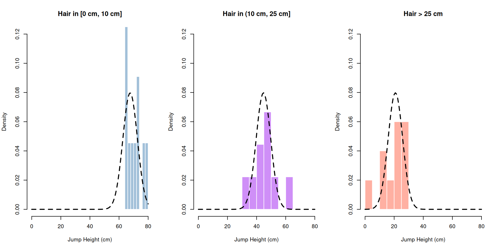
The three histograms in Figure 2.9 have clearly different centers: the conditional distribution of jump heights shifts downward as hair length increases. This is the conditional distribution \(f_{Y|X}(y|x)\) in action.
More than two Variables
In regression analysis (Chapter 3) we typically have one outcome \(Y\) and \(K\) predictors \(X_1, X_2, \ldots, X_K\). All concepts from the bivariate case extend naturally.
Joint distribution. The joint density \(f_{Y, X_1, \ldots, X_K}(y, x_1, \ldots, x_K)\) satisfies the same three key properties:
1. Non-Negativity: \[ f_{Y, X_1, \ldots, X_K}(y, x_1, \ldots, x_K) \geq 0 \quad \text{for all } (y, x_1, \ldots, x_K) \] 2. Total Probability: \[ \int \cdots \int f_{Y, X_1, \ldots, X_K}(y, x_1, \ldots, x_K)\, dx_K \cdots dx_1\, dy = 1. \] 3. General Probabilities: \[\begin{align*} &P\!\left((Y, X_1, \ldots, X_K) \in [a_Y,b_Y]\times[a_{X_1},b_{X_1}]\times\dots\times[a_{X_K},b_{X_K}]\right)\\ &= \int_{a_Y}^{b_Y}\int_{a_{X_1}}^{b_{X_1}}\dots\int_{a_{X_K}}^{b_{X_K}} f_{Y,X_1,\dots,X_K}(y, x_1,\dots,x_K)\, dx_K\dots dx_1\, dy. \end{align*}\] That is, the probability that a realization of \((Y, X_1, \ldots, X_K)\) falls into the rectangular region \([a_Y,b_Y]\times[a_{X_1},b_{X_1}]\times\dots\times[a_{X_K},b_{X_K}]\) equals the integral of \(f_{Y, X_1, \ldots, X_K}\) over that region.
The joint cdf is \(F_{Y, X_1, \ldots, X_K}(y, x_1, \ldots, x_K) = P(Y \leq y,\, X_1 \leq x_1,\, \ldots,\, X_K \leq x_K)\).
Covariance and Correlation Matrix
With \(K+1\) variables, pairwise covariances are collected in the \((K+1)\times (K+1)\) covariance matrix
\[ \begin{pmatrix} \text{Var}(Y) & \text{Cov}(Y,X_1) & \cdots & \text{Cov}(Y,X_K) \\ \text{Cov}(X_1,Y) & \text{Var}(X_1) & \cdots & \text{Cov}(X_1,X_K) \\ \vdots & \vdots & \ddots & \vdots \\ \text{Cov}(X_K,Y) & \text{Cov}(X_K,X_1) & \cdots & \text{Var}(X_K) \end{pmatrix}. \]
Standardizing each entry by the product of the corresponding standard deviations yields the correlation matrix: \[ \begin{pmatrix} 1 & \text{Cor}(Y,X_1) & \cdots & \text{Cor}(Y,X_K) \\ \text{Cor}(X_1,Y) & 1 & \cdots & \text{Cor}(X_1,X_K) \\ \vdots & \vdots & \ddots & \vdots \\ \text{Cor}(X_K,Y) & \text{Cor}(X_K,X_1) & \cdots & 1 \end{pmatrix}. \]
Typically, we do not know the covariance matrix, and thus also not the correlation matrix. In R, cov() and cor() accept a data frame or matrix and return the sample versions.
🤸♀️ Jump-Test Data Example
Let us denote the observed hair length data by \[ X_{i,1,\text{obs}}\quad i=1,2,\dots \] and the observed gender data by \[ X_{i,2,\text{obs}}\quad i=1,2,\dots, \] where \[ X_{i,2,\text{obs}} = 0\quad\text{if person $i$ is male} \] \[ X_{i,2,\text{obs}} = 1\quad\text{if person $i$ is female} \]
| Y: Jump Height (cm) | X1: Hair Length (cm) | X2: Gender (1 = female, 0 = male) |
|---|---|---|
| 71.84 | 3.94 | 0 |
| 64.82 | 3.40 | 0 |
| 26.43 | 30.06 | 1 |
| 77.58 | 3.95 | 0 |
| 64.46 | 4.10 | 0 |
| 53.45 | 16.68 | 1 |
The estimate of the covariance matrix \[ \begin{pmatrix} \widehat{\text{Var}}_{\operatorname{obs}}(Y) & \widehat{\text{Cov}}_{\operatorname{obs}}(Y,X_1)& \widehat{\text{Cov}}_{\operatorname{obs}}(Y,X_2)\\ \widehat{\text{Cov}}_{\operatorname{obs}}(X_1,Y) & \widehat{\text{Var}}_{\operatorname{obs}}(X_1) & \widehat{\text{Cov}}_{\operatorname{obs}}(X_1,X_2)\\ \widehat{\text{Cov}}_{\operatorname{obs}}(X_2,Y) & \widehat{\text{Cov}}_{\operatorname{obs}}(X_2,X_1) & \widehat{\text{Var}}_{\operatorname{obs}}(X_2) \end{pmatrix}. \] can be computed by
jumpheight hairlength gender01
jumpheight 516.64 -264.78 -8.54
hairlength -264.78 144.62 4.75
gender01 -8.54 4.75 0.24and \[ \begin{pmatrix} 1 & \widehat{\text{Cor}}_{\operatorname{obs}}(Y,X_1)& \widehat{\text{Cor}}_{\operatorname{obs}}(Y,X_2)\\ \widehat{\text{Cor}}_{\operatorname{obs}}(X_1,Y) & 1 & \widehat{\text{Cor}}_{\operatorname{obs}}(X_1,X_2)\\ \widehat{\text{Cor}}_{\operatorname{obs}}(X_2,Y) & \widehat{\text{Cor}}_{\operatorname{obs}}(X_2,X_1) & 1 \end{pmatrix}. \] can be computed by
jumpheight hairlength gender01
jumpheight 1.00 -0.97 -0.77
hairlength -0.97 1.00 0.81
gender01 -0.77 0.81 1.00You should, however, never trust a single number. Always also look at the data!
Conditional Distribution
The conditional density of \(Y\) given \(X_1 = x_1, \ldots, X_K = x_K\) is
\[ f_{Y \mid X_1, \ldots, X_K}(y \mid x_1, \ldots, x_K) = \frac{f_{Y, X_1, \ldots, X_K}(y, x_1, \ldots, x_K)} {f_{X_1, \ldots, X_K}(x_1, \ldots, x_K)}, \] where \(f_{X_1, \ldots, X_K}\) is the joint density of \(X_1,\dots,X_K\).
2.5 Conditional Mean: The Regression Function
The conditional mean of \(Y_i\) given \(X_{i} = x\) is the expected jump height for all students with observed hair length equal to \(x\): \[ E(Y \mid X = x) = \int_{-\infty}^{\infty} y\, f_{Y \mid X}(y \mid x)\, dy. \]
When we view \[ m(x) = E(Y_i \mid X_i = x) \] as a function of \(x\), it is called the regression function. It describes how the average outcome changes across different observed values of the predictor.
There are generally two types of estimation approaches:
- Making a parametric functional form assumption for the regression function \(m(x) = E(Y \mid X = x)\) and then estimating the parameters (Chapter 3)
- Making no parametric functional form assumption and estimating \(m(x) = E(Y \mid X = x)\) directly from the data, for instance, by estimating the conditional mean \(\int_{-\infty}^{\infty} y\, f_{Y \mid X}(y \mid x)\, dy\) for different values of \(x.\)
🤸♀️ Jump-Test Data Example
When we do not want to make a parametric functional form assumption for the regression function \(E(Y \mid X = x),\) we can take our three estimates of the conditional densities \(f_{Y \mid X}(y \mid x)\) shown in Figure 2.9:
- Group 1 short hair:
-
jump_hair_shortcontains the jump heights of the students with hair length in \([0,10]\) cm. - Average hair length in this group is \(x=\)
hair_group_mean[1]\(=\) 5.35
-
- Group 2 medium hair:
-
jump_hair_mediumcontains the jump heights of the students with hair length in \((10,25]\) cm. - Average hair length in this group is \(x=\)
hair_group_mean[2]\(=\) 18.45
-
- Group 3 long hair:
-
jump_hair_longcontains the jump heights of the students with hair length \(>25\) cm. - Average hair length in this group is \(x=\)
hair_group_mean[3]\(=\) 32.08
-
That is, we can estimate the following three conditional means:
| True (usually unknown) quantity | Estimated value |
|---|---|
| \(E(Y \mid X = 5.35) = m(5.35)\) |
\(\widehat{m}(5.35) = \widehat{E}(Y \mid X = 5.35) =\) mean(jump_hair_short) \(=\) 70 |
| \(E(Y \mid X = 18.45) = m(18.45)\) |
\(\widehat{m}(18.45) = \widehat{E}(Y \mid X = 18.45) =\) mean(jump_hair_medium) \(=\) 45.67 |
| \(E(Y \mid X = 32.08) = m(32.08)\) |
\(\widehat{m}(32.08) = \widehat{E}(Y \mid X = 32.08) =\) mean(jump_hair_long) \(=\) 19.28 |
Let’s look at these three estimated conditional means together with the full data set.
cond_mean_jump <- c(mean(jump_hair_short),
mean(jump_hair_medium),
mean(jump_hair_long))
plot(x = jumptest_data$hairlength,
y = jumptest_data$jumpheight,
xlab = "Hair Length (cm)",
ylab = "Jump Height (cm)",
pch = 19, col = "grey70", axes = FALSE)
axis(1, at = c(round(hair_group_mean[1],2),
10,
round(hair_group_mean[2],2),
25,
round(hair_group_mean[3],2)))
axis(2)
box()
abline(a = beta1, b = beta2, col = "black", lwd = 2, lty = 2)
abline(v = c(10,25))
mtext(c("Group 1", "Group 2", "Group 3"), side = 3, line = 0.5,
at = c(hair_group_mean[1],
hair_group_mean[2],
hair_group_mean[3]))
points(x = hair_group_mean,
y = cond_mean_jump,
pch = 19,
col = "tomato",
cex = 1.8)
legend("topright",
legend = c(expression(hat(E)(Y ~ "|" ~ X == x)),
expression(E(Y ~ "|" ~ X == x))),
col = c("tomato", "black"),
pch = c(19, NA),
lty = c(NA, 2),
lwd = c(2, 2),
bty = "n")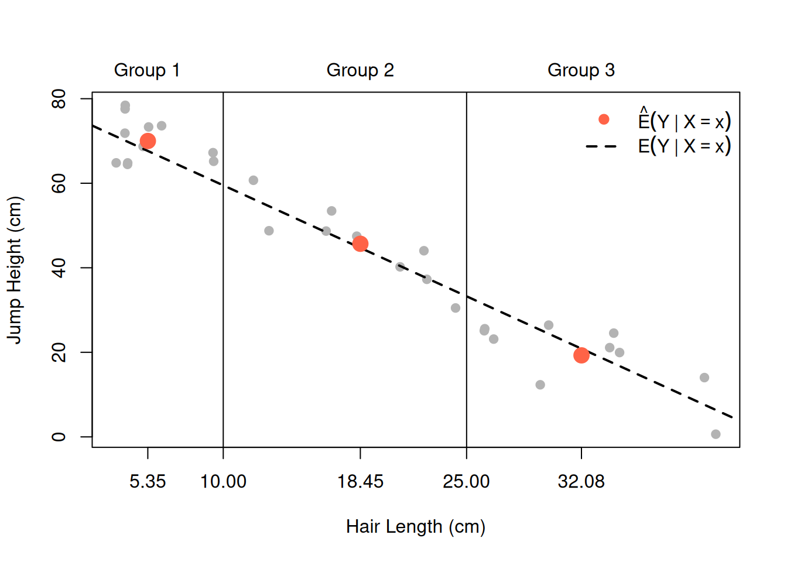
The three estimated conditional means fall roughly on a line. This visual observation motivates parametrizing the regression function as a straight line:
\[\begin{align*} E(Y_i \mid X_i = x) & = m(x)\\ &= \beta_1 + \beta_2 x. \end{align*}\]
Doing so, has a fundamental adavantage: Provided that this functional form assumption (parametrization) is correct, we only have to estimate the unknown parameters \(\beta_1\) and \(\beta_2\) to get a good estimate of \(E(Y_i \mid X_i = x).\)
The next chapter (Chapter 3) develops the method for estimating \(\beta_1\) and \(\beta_2\) from the observed pairs \[ (Y_{1,\operatorname{obs}},\, X_{1,\operatorname{obs}}),\, (Y_{2,\operatorname{obs}},\, X_{2,\operatorname{obs}}),\, \ldots,\, (Y_{n,\operatorname{obs}},\, X_{n,\operatorname{obs}}) \] and for assessing how precisely these estimates pin down the true line.
2.6 Important Distributions
Regression analysis relies on three distributions for statistical inference. They are introduced here as a reference; their roles in hypothesis testing and model evaluation are developed in Chapter 3.
2.6.1 The Normal Distribution
The most important distribution in statistics is the normal distribution (also called the Gaussian distribution). A random variable \(X\) follows a normal distribution with mean \(\mu\) and variance \(\sigma^2\), written \(X \sim \mathcal{N}(\mu, \sigma^2)\), if its density is
\[ f_X(x) = \frac{1}{\sigma\sqrt{2\pi}} \exp\!\left\{-\frac{(x - \mu)^2}{2\sigma^2}\right\}, \quad x \in \mathbb{R}. \]
The normal density is symmetric and bell-shaped, with:
- \(\mu\) controlling the location (center) of the distribution, and
- \(\sigma > 0\) controlling the spread (how wide the bell is).
The special case \(\mu = 0\), \(\sigma = 1\) is called the standard normal distribution, denoted \(Z \sim \mathcal{N}(0, 1)\).
## y-range covering the three densities (plus room for the legend)
x_grid <- seq(-7, 9, length.out = 500)
y_max <- max(dnorm(x_grid, mean = 0, sd = 1),
dnorm(x_grid, mean = 2, sd = 1),
dnorm(x_grid, mean = 0, sd = 2))
curve(dnorm(x, mean = 0, sd = 1),
xlim = c(-7, 9), ylim = c(0, y_max * 1.15),
ylab = "Density", xlab = "x",
col = "steelblue", lwd = 2)
curve(dnorm(x, mean = 2, sd = 1),
add = TRUE, col = "tomato", lwd = 2)
curve(dnorm(x, mean = 0, sd = 2),
add = TRUE, col = "darkgreen", lwd = 2)
legend("topright",
legend = c(expression(mu == 0 ~ "," ~ sigma == 1),
expression(mu == 2 ~ "," ~ sigma == 1),
expression(mu == 0 ~ "," ~ sigma == 2)),
col = c("steelblue", "tomato", "darkgreen"),
lwd = 2, bty = "n")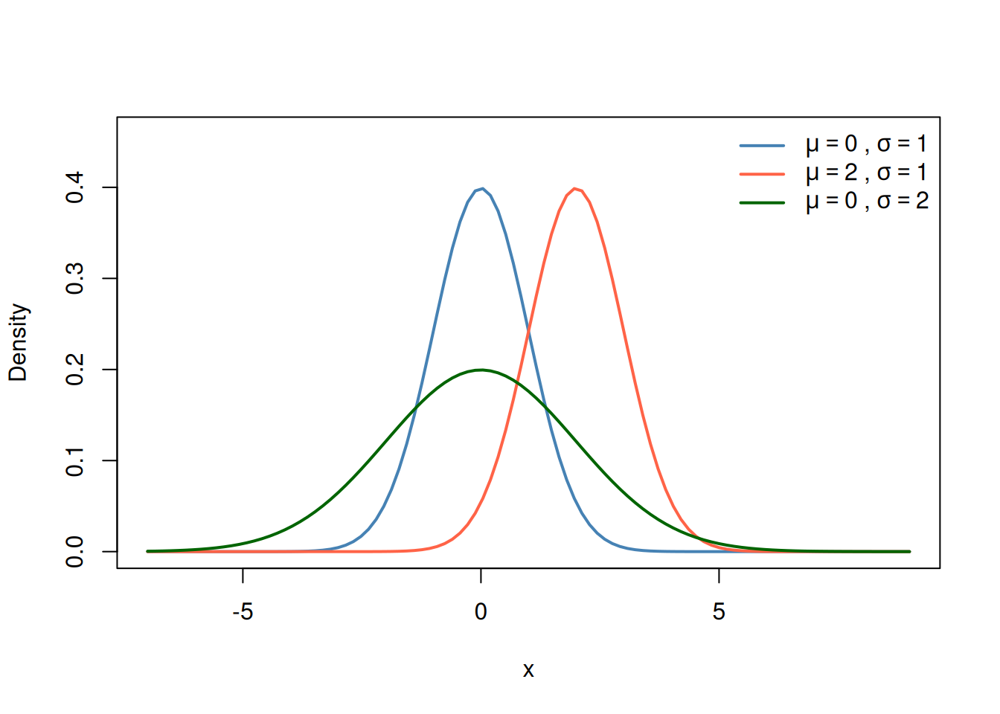
R provides four functions for any distribution:
-
d(density) -
p(cdf) -
q(quantile) -
r(random draws).
For the normal:
[1] 1.3709584 -0.5646982 0.3631284dnorm(x = 0, mean = 0, sd = 1) # density at x = 0[1] 0.3989423pnorm(q = 1.96, mean = 0, sd = 1) # P(Z <= 1.96)[1] 0.9750021qnorm(p = 0.975, mean = 0, sd = 1)# z such that P(Z <= z) = 0.975[1] 1.959964The normal distribution occupies a central place in statistics for two reasons:
- Many natural measurements (heights, exam scores, some measurement errors) are approximately normally distributed.
- The Central Limit Theorem guarantees that the sum \[ \sum_{i=1}^n X_i = X_1 + X_2 + \dots + X_n \] of a large number (\(n\to\infty\)) of independent random variables is approximately normally distributed, regardless of the original distribution of the \(X_i\)’s. This result underpins the inference methods we develop in the next chapter.
- 3Blue1Brown has a good video on the CLT: CLT-Video
A particularly useful fact for standardizing:
If \[ X \sim \mathcal{N}(\mu, \sigma^2), \] then \[ Z = \frac{X - \mu}{\sigma} \sim \mathcal{N}(0, 1). \]
Estimating the Normal Parameters from Data
Assuming normality means we assume \(X \sim \mathcal{N}(\mu, \sigma^2)\). The distribution is then fully characterized by two unknown parameters, \(\mu\) and \(\sigma^2\), which we estimate from the observed values \(X_{1,\operatorname{obs}}, \ldots, X_{n,\operatorname{obs}}\):
\[ \hat{\mu}_{\operatorname{obs}} = \bar{X}_{\operatorname{obs}} = \frac{1}{n}\sum_{i=1}^n X_{i,\operatorname{obs}} \] \[ \hat{\sigma}^2_{\operatorname{obs}} = s_{\operatorname{obs}}^2 = \frac{1}{n-1}\sum_{i=1}^n (X_{i,\operatorname{obs}} - \bar{X}_{\operatorname{obs}})^2. \]
In R, mean() computes \(\hat{\mu}_{\operatorname{obs}}\) and var() computes \(\hat{\sigma}^2_{\operatorname{obs}}.\)
Substituting \(\hat{\mu}_{\operatorname{obs}}\) and \(\hat{\sigma}_{\operatorname{obs}}\) into the normal density formula gives the fitted normal density estimator
\[ \hat{f}_{X,\operatorname{obs}}^{\operatorname{norm}}(x) = \frac{1}{\hat{\sigma}_{\operatorname{obs}}\sqrt{2\pi}} \exp\!\left\{-\frac{(x - \hat{\mu}_{\operatorname{obs}})^2}{2\hat{\sigma}^2_{\operatorname{obs}}}\right\}. \]
This is a parametric approach: it assumes a specific functional form (the bell curve) and only estimates the two free parameters \(\mu\) and \(\sigma.\)
The non-parametric estimators \(\hat{f}_{X,\operatorname{obs}}^{\operatorname{hist}}\) and \(\hat{f}_{X,\operatorname{obs}}^{\operatorname{kernel}}\) from Section 2.2.1 make no such functional form assumption. The trade-off is flexibility versus efficiency: parametric estimates use fewer degrees of freedom and can be (much) more precise — but only if the assumed distribution is correct.
Figure 2.13 overlays \(\hat{f}_{X,\operatorname{obs}}^{\operatorname{norm}}\) on the histogram of hair lengths. The bell curve does not fit well: the two peaks (one for short-haired, one for long-haired students) are a feature a single normal distribution cannot capture. This is a reminder that distributional assumptions should always be checked against the data.
mu_hat <- mean(jumptest_data$hairlength)
sig_hat <- sd(jumptest_data$hairlength)
## Histogram heights without plotting (to find the needed y-range)
hist_est <- hist(jumptest_data$hairlength, plot = FALSE)
## y-range that covers the histogram and both density curves
x_grid <- seq(min(hist_est$breaks), max(hist_est$breaks), length.out = 500)
y_max <- max(hist_est$density,
f_X(x_grid),
dnorm(x_grid, mean = mu_hat, sd = sig_hat))
hist(jumptest_data$hairlength,
freq = FALSE,
ylim = c(0, y_max * 1.05),
col = adjustcolor("steelblue", alpha.f = 0.4),
border = "white",
xlab = "Hair Length (cm)",
main = "")
curve(f_X(x), add = TRUE, col = "black", lwd = 2)
curve(dnorm(x, mean = mu_hat, sd = sig_hat),
add = TRUE, col = "tomato", lwd = 2, lty = 2)
legend("topright",
legend = c(expression(hat(f)["X,obs"]^"hist" * "(x)"),
expression(hat(f)["X,obs"]^"norm" * "(x)"),
expression(f[X](x))),
pch = c(15, NA, NA),
lty = c(NA, 2, 1),
lwd = c(NA, 2, 2),
col = c(adjustcolor("steelblue", alpha.f = 0.4), "tomato", "black"),
bty = "n")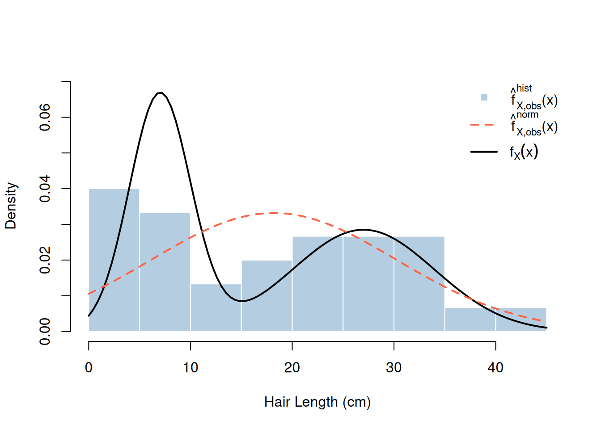
2.6.2 The Chi-Squared Distribution
The chi-squared distribution with \(\nu\) degrees of freedom, written \(W \sim \chi^2_\nu\), is defined as the distribution of the sum of \(\nu\) squared independent standard normal random variables:
That is, if \[ Z_1^2, Z_2^2, \cdots, Z_\nu^2 \] are \(\nu\) many independent standard normal \(\mathcal{N}(0,1)\) distributed random variables, then \[ W = Z_1^2 + Z_2^2 + \cdots + Z_\nu^2 \sim \chi^2_\nu. \]
Key properties: the distribution is right-skewed with support on \([0, \infty)\).
- Mean: \(E(W)=\nu\)
- Variance: \(\text{Var}(W)=2\nu\)
For larger degrees of freedoms parameters \(\nu,\) the distribution becomes more symmetric and shifts rightward.
df_vals <- c(1, 2, 3, 5, 10)
df_cols <- c("black", "steelblue", "tomato", "darkgreen", "purple")
curve(dchisq(x, df = df_vals[1]), xlim = c(0, 20), ylim = c(0, 0.5),
ylab = "Density", xlab = "x", col = df_cols[1], lwd = 2)
for (k in 2:length(df_vals)) {
curve(dchisq(x, df = df_vals[k]), add = TRUE, col = df_cols[k], lwd = 2)
}
legend("topright",
legend = paste("ν =", df_vals),
col = df_cols,
lwd = 2, bty = "n")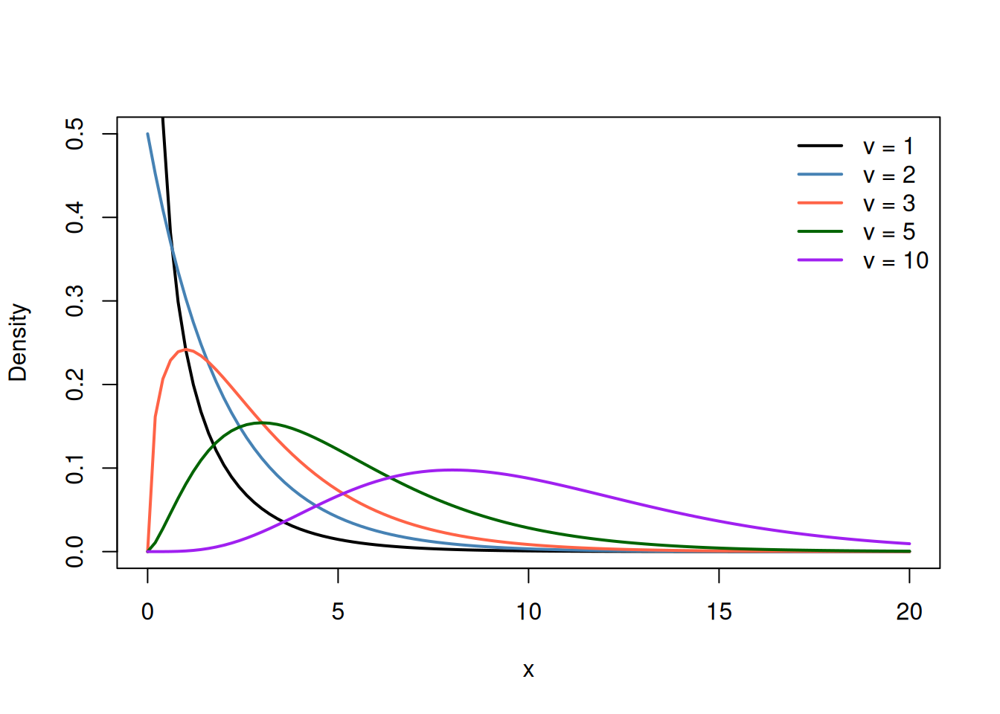
The chi-squared distribution arises naturally in regression analysis when testing hypotheses about model coefficients. We will encounter it in Section 3.3.6.
2.6.3 The F-Distribution
The F-distribution with numerator degrees of freedom \(\nu_1\) and denominator degrees of freedom \(\nu_2\), written \(V \sim F_{\nu_1,\nu_2}\), is the distribution of the ratio of two independent chi-squared random variables, each divided by its degrees of freedom:
\[ V = \frac{W_1/\nu_1}{W_2/\nu_2} \sim F_{\nu_1,\nu_2}, \quad W_1 \sim \chi^2_{\nu_1},\quad W_2 \sim \chi^2_{\nu_2},\quad W_1 \perp W_2. \]
Like the chi-squared distribution, the F-distribution has support on \([0, \infty)\) and is right-skewed. Its shape depends on both \(\nu_1\) and \(\nu_2\).
curve(df(x, df1 = 1, df2 = 20), xlim = c(0, 6), ylim = c(0, 1.3),
ylab = "Density", xlab = "x",
col = "steelblue", lwd = 2)
curve(df(x, df1 = 3, df2 = 20),
add = TRUE, col = "tomato", lwd = 2)
curve(df(x, df1 = 5, df2 = 20),
add = TRUE, col = "darkgreen", lwd = 2)
legend("topright",
legend = c("F(1, 20)", "F(3, 20)", "F(5, 20)"),
col = c("steelblue", "tomato", "darkgreen"),
lwd = 2, bty = "n")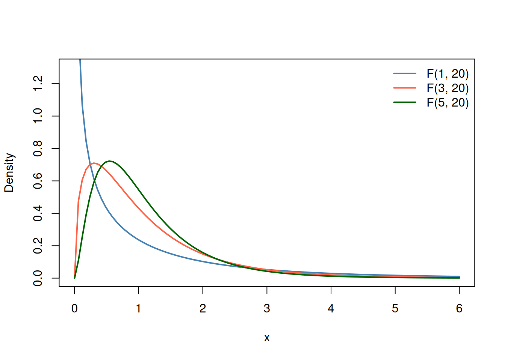
The F-distribution is used in regression for the F-test, which asks whether a set of predictors jointly explains variation in the outcome. We return to this in Section 3.3.6.
2.7 The Data-Generating Process
We now have all the building blocks to formalize the concept introduced in Section 2.1.
Data-Generating Process
A data-generating process (DGP) is the complete probability model assumed to have produced the observed data. It specifies:
- Which random variables are involved and what their distributions are.
- How different variables are related — in particular, the conditional distribution of the outcome \(Y\) given the predictor(s) \(X\).
- How the observations are drawn. Uusually: as independent draws from the same distribution.
For a so-called simple linear regression (straight line) with normal distributed error term, the DGP is written as
\[ Y_i = \beta_1 + \beta_2 X_i + \varepsilon_i, \quad \varepsilon_i \overset{\text{i.i.d.}}{\sim} \mathcal{N}(0,\, \sigma^2), \quad i = 1, \ldots, n. \] where
- \(Y_i\) is called the outcome or dependent variable
- \(X_i\) is called the predictor or regressor variable
- \(\varepsilon_i\) is a statistical “error” term that captures everything in \(Y_i\) that is not explained by \(\beta_1 + \beta_2 X_i.\) Typically, we assume (hopefully it’s true) that \(E(\varepsilon_i|X_i)=0.\)
Moreover, often we assume an independent and identically distributed (i.i.d.) sampling: That is, we assume:
- Any two pairs of random variables \[
(Y_i, X_i)\quad\text{and}\quad(Y_j,X_j)\quad\text{with } i\neq j
\] are independent of each other; i.e., the realization of \((Y_i, X_i)\) is not affected by and also does not affect the realization of \((Y_j, X_j)\) for any \(j\neq i.\)
- All random pairs \[ (Y_i, X_i)\quad i=1,2,\dots,n \] have the same distribution.
The Usually Unknown Part of the DGP
Usually, we do not know the underlying distributions of \((Y_i, X_i)\) and \(\varepsilon_i.\)
But let us say we know them to be as follows:
- \(X_i\sim 0.5\cdot\mathcal{N}(7,\,3^2) + 0.5\cdot\mathcal{N}(27,\,7^2)\) for all \(i=1,2,\dots\) I.e. the distribution of the \(X_i\)’s is 50/50 mixture of two normals.
- \(\beta_1=77\) and \(\beta_2=-1.75\)
- \(\varepsilon_i\sim\mathcal{N}(0,\sigma^2)\) with \(\sigma = 5\)
Given this, we know also the conditional distribution of \(Y_i\) given \(X_i\colon\)
\[ Y_i \mid X_i \sim \mathcal{N}( \beta_1 + \beta_2 X_i ,\, \sigma^2). \] I.e., once we know the realized value of \(X_i=x,\) we know the conditional normal distribution of \(Y_i\) given \(X_i=x\colon\) \[\begin{align*} Y_i \mid X_i = x & \sim \mathcal{N}( \beta_1 + \beta_2 x ,\, \sigma^2)\\ & \sim \mathcal{N}(77 -1.75 \cdot x ,\, 5^2) \end{align*}\]
In parametric regression analysis, we want to estimate the unknown parameters
- \(\beta_1\),
- \(\beta_2\), and
- \(\sigma^2\)
based on one observed realization \[ (Y_{1,\text{obs}}, X_{1,\text{obs}}), \ldots, (Y_{n,\text{obs}}, X_{n,\text{obs}}) \] of the (i.i.d.) random sample \[ (Y_1, X_1), \ldots, (Y_n, X_n). \]
Simulating from a DGP
If we know all specifications of the DGP (in real data, we usually do not), we can simulate from it: we draw artificial data according to the model, with known parameter values.
Simulation is a powerful tool — it lets us
- see what data the DGP would produce if the parameters were known,
- check whether our estimation method is good in estimating the (usually unknown) parameters.
The code below simulates jump-height and hair-length data from a linear DGP with known \(\beta_1=77,\) \(\beta_2=-1.75,\) and \(\sigma=5.\)
set.seed(42)
n_sim <- 200
## True DGP parameters
beta1 <- 77
beta2 <- -1.75
sigma <- 5
## Simulate predictor values from the two-component mixture
grp_sim <- sample(c("long", "short"), size = n_sim, replace = TRUE)
x_sim <- pmax(ifelse(grp_sim == "long", rnorm(n_sim, 27, 7),
rnorm(n_sim, 7, 3)), 1)
## Simulate outcomes from the DGP
eps_sim <- rnorm(n_sim, mean = 0, sd = sigma)
y_sim <- beta1 + beta2 * x_sim + eps_sim
y_sim <- pmax(y_sim, 0) ## scores cannot be negative
par(mfrow = c(1, 2))
## Simulated data
x_line <- c(1, 50)
y_line <- beta1 + beta2 * x_line
plot(x_sim, y_sim,
xlab = "Hair Length (cm)", ylab = "Jump Height (cm)",
main = "Simulated from DGP",
pch = 19, col = adjustcolor("steelblue", alpha.f = 0.4))
lines(x_line, y_line, col = "tomato", lwd = 2)
legend("topright",
legend = expression(E(Y ~ "|" ~ X == x) == beta[1] + beta[2] * x),
col = "tomato", lwd = 2, bty = "n")
## Observed study data
plot(jumptest_data$hairlength, jumptest_data$jumpheight,
xlab = "Hair Length (cm)", ylab = "Jump Height (cm)",
main = "Observed Study Data",
pch = 19, col = adjustcolor("grey40", alpha.f = 0.7))
par(mfrow = c(1, 1))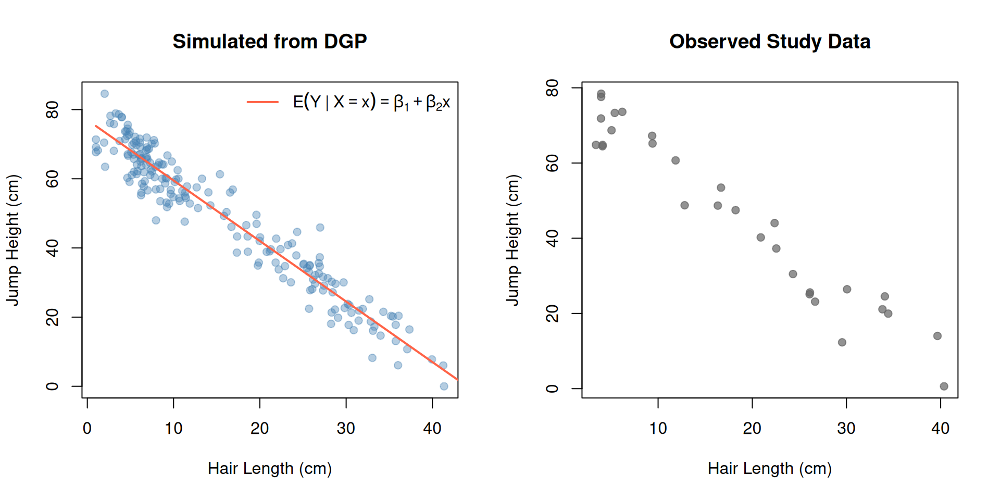
The red line in the left panel is the true regression function \[ E(Y \mid X = x) = \beta_1 + \beta_2 x. \] In the real problem (right panel), this line is unknown — we have to estimate it from data. Chapter Chapter 3 shows how to do that using OLS.
Notice that each simulated point in the left panel falls at a vertical distance from the true line: this distances are the realized values of the error terms \(\varepsilon_i \sim \mathcal{N}(0, \sigma^2)\).
Some students jump higher than the regression line predicts (\(\varepsilon_i > 0\)); others score lower (\(\varepsilon_i < 0\)).
2.7.1 Random Samples and i.i.d.
The DGP above assumes that each observation is drawn independently and from the same distribution. This is the i.i.d. assumption (independent and identically distributed).
Random Sample
A collection of random variable pairs \((Y_1, X_1), (Y_2, X_2), \ldots, (Y_n, X_n)\) is a random sample if:
- Independent: Each pair \((Y_i, X_i)\) is independent of all other pairs \((Y_j, X_j)\) for \(j \neq i\).
- Identically distributed: Every pair \((Y_i, X_i)\) is drawn from the same joint distribution \(F_{Y,X}\).
The i.i.d. assumption is the default in cross-sectional studies, where we observe a large number of units (people, firms, countries) at a single point in time. It underpins the statistical properties of the OLS estimator that we derive in the next chapter.
Association Is Not Causation
The slope \(\beta_2 \approx -1.75\) in our DGP says that students who differ by 1 cm in hair length differ, on average, by \(-1.75\) cm in jump height. But this is a statistical association, not a causal claim. Cutting your hair will not improve your jump height.
The association in the data is almost entirely driven by an unobserved variable — gender — that affects (not causes) both hair length and physical strength. Statisticians call this confounding: a third variable that influences both \(X\) and \(Y\), creating a spurious correlation between them.
This distinction — association versus causation — is one of the central themes of the next chapter. After introducing OLS and showing how to estimate and interpret \(\hat\beta_2\), Section 3.7 asks what \(\hat\beta_2\) really tells us. The short answer is: it estimates a conditional association, which may or may not reflect a causal effect.
2.8 Summary
We started with a simple data set — hair lengths and jump heights of \(n=30\) students — and asked where such data come from. The answer developed in this chapter: the observed numbers \[ (Y_{1,\operatorname{obs}},\, X_{1,\operatorname{obs}}),\, \ldots,\, (Y_{n,\operatorname{obs}},\, X_{n,\operatorname{obs}}) \] are one realization of random variable pairs \((Y_i, X_i)\) whose behavior is governed by a data-generating process.
The tools we collected along the way:
- Single random variables (Section 2.2): the density \(f_X\) for continuous variables (Section 2.2.1), the probability mass function \(p_W\) for discrete ones (Section 2.2.2), and the cdf \(F_X\) for both (Section 2.2.3). Each of them is usually unknown and has to be estimated — non-parametrically (histogram, kernel density estimate, relative frequencies, empirical cdf) or parametrically (Section 2.6.1).
- Summaries of a distribution (Section 2.3): mean \(E(X)\) for the location and variance \(\text{Var}(X)\) for the spread, estimated by the sample mean and the sample variance.
- Two or more random variables (Section 2.4): the joint density \(f_{Y,X}\), the marginal densities \(f_Y\) and \(f_X\), covariance and correlation as summaries of co-movement, and the conditional density \(f_{Y\mid X}(y \mid x)\), which describes the outcome \(Y\) within a group of students that share the same hair length \(x.\)
- The regression function (Section 2.5): the conditional mean \(m(x) = E(Y \mid X = x)\) — the one object that the next chapter is all about.
- The DGP (Section 2.7): the complete probability model \[ Y_i = \beta_1 + \beta_2 X_i + \varepsilon_i, \quad \varepsilon_i \overset{\text{i.i.d.}}{\sim} \mathcal{N}(0,\, \sigma^2), \] together with an i.i.d. random sample (Section 2.7.1). It is the bridge between probability theory and the data in your spreadsheet.
The One Thing to Take Along
Everything we observe is an estimate of something usually unknown:
| Usually unknown truth | Estimate from data |
|---|---|
| \(f_X(x)\), \(p_G(g)\), \(F_X(x)\) | histogram / kernel density estimate, relative frequencies, empirical cdf |
| \(E(X)\), \(\text{Var}(X)\) | \(\bar{X}_{\operatorname{obs}}\), \(\hat{\sigma}^2_{X,\operatorname{obs}}\) |
| \(\text{Cov}(X,Y)\), \(\text{Cor}(X,Y)\) | \(\widehat{\text{Cov}}_{\operatorname{obs}}(X,Y)\), \(\widehat{\text{Cor}}_{\operatorname{obs}}(X,Y)\) |
| \(E(Y \mid X = x) = \beta_1 + \beta_2 x\) | ⟵ this is what Chapter 3 is about |
The estimates in the right column are computed from one data set. Had we measured a different group of students, we would have obtained different numbers — this is the sampling variability we met at the very beginning of the chapter.
In the next chapter we take the last row of that table seriously: we assume the linear DGP, estimate \(\beta_1\) and \(\beta_2\) by ordinary least squares, and ask how precise those estimates are — and what they do, and do not, tell us about cause and effect.